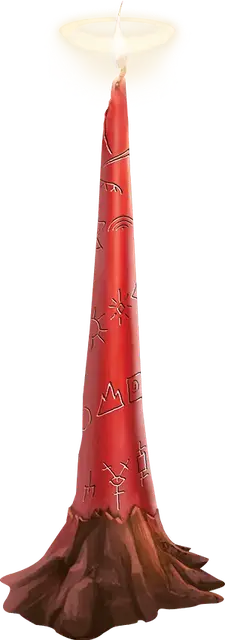

Свеча мольбы
Candle of Invocation
Чудесный предмет, очень редкий (требуется настройка)

Рекомендованная стоимость 5 001-50 000 зм
Эта тонкая восковая свеча посвящена определённому божеству и настроена на мировоззрение этого божества. Мировоззрение свечи можно определить заклинанием обнаружение зла и добра [detect evil and good]. Мастер сам выбирает божество и мировоззрение, либо определяет их случайным образом.
| к20 | Мировоззрение |
| 1-2 | Хаотично-злое |
| 3-4 | Хаотично-нейтральное |
| 5-7 | Хаотично-доброе |
| 8-9 | Нейтрально-злое |
| 10-11 | Нейтральное |
| 12-13 | Нейтрально-доброе |
| 14-15 | Законно-злое |
| 16-17 | Законно-нейтральное |
| 18-20 | Законно-доброе |
Магия свечи активируется, когда свечу зажигают, что совершается действием. Погорев 4 часа, свеча уничтожается. Вы можете затушить свечу раньше, чтобы воспользоваться ей же позже. Минимальная единица учёта времени горения — 1 минута.
Будучи зажжённой, свеча испускает тусклый свет в радиусе 30 футов. Все существа в области этого света, чьё мировоззрение совпадает с мировоззрением свечи, совершают броски атаки, спасброски и проверки характеристик с преимуществом. Кроме того, жрецы и друиды в области света, чьё мировоззрение совпадает с мировоззрением свечи, могут накладывать подготовленные заклинания 1-го уровня, не тратя ячейки заклинаний, и эффект таких заклинаний будет как у заклинаний, наложенных с использованием ячейки 1-го уровня.
В качестве альтернативы, когда вы впервые зажигаете совершенно новую свечу, вы можете наложить ей заклинание врата [gate]. Это мгновенно уничтожает свечу.